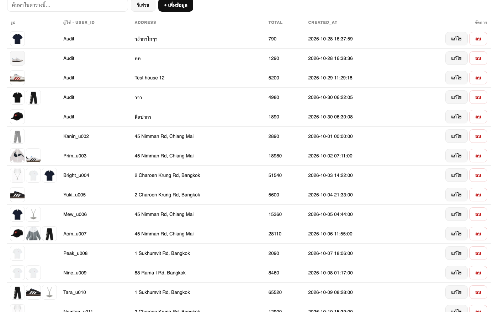

04 · ER Diagram
ER Diagram ของระบบ

MOOD WEAR · Database Final Project4 / 11
CREATE VIEW v_order_items AS
SELECT oi.id, oi.order_id, u.username AS user_name,
oi.product_id, p.name AS product_name,
oi.quantity, oi.size, oi.color, oi.unit_price
FROM order_items oi
LEFT JOIN orders o ON o.id = oi.order_id
LEFT JOIN users u ON u.id = o.user_id
LEFT JOIN products p ON p.id = oi.product_id;
| View | ใช้ดูอะไร |
|---|---|
| v_orders | ออเดอร์ + ชื่อผู้ใช้ |
| v_order_items | รายการสั่งซื้อ + ชื่อผู้ใช้/สินค้า |
| v_cart_items | ตะกร้า + ชื่อผู้ใช้/สินค้า |
| v_favorites | ถูกใจ + ชื่อผู้ใช้/สินค้า |
บันทึกไว้ในไฟล์ database_export_sqlite.sql / database_export_mysql.sql แล้ว



แสดงกราฟยอดขาย 14 วัน, สินค้าขายดีพร้อมรูป, ผู้ซื้อสูงสุด, ยอดขายตามหมวดหมู่ และออเดอร์ล่าสุด — ข้อมูลจาก GET /admin/summary